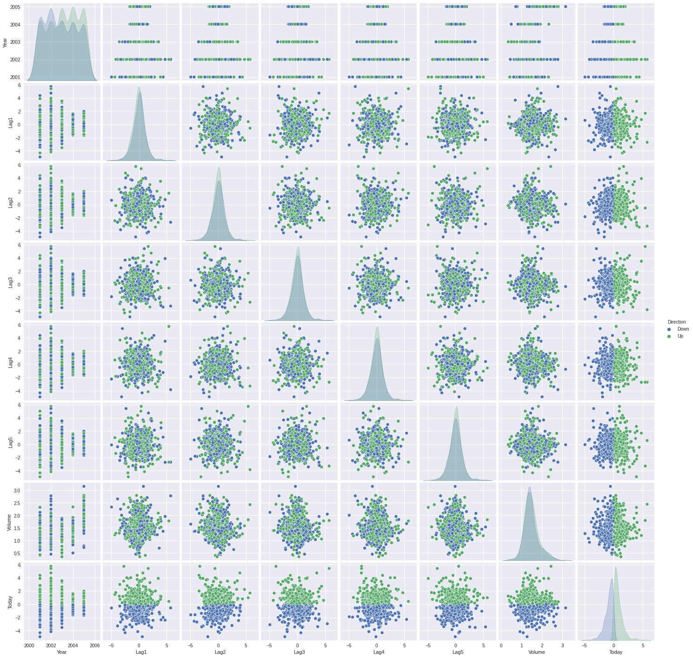
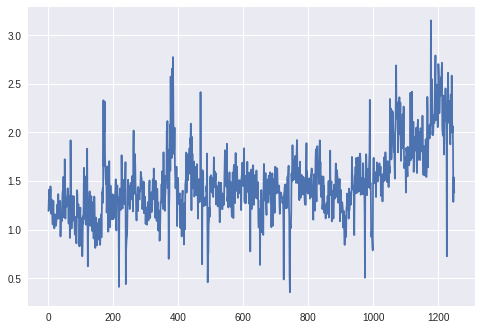
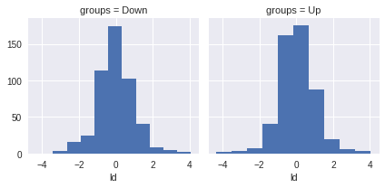

4.6.1 The Stock Market Data¶
# imports and setup
%matplotlib inline
import numpy as np
import seaborn as sns
import matplotlib.pyplot as plt
import pandas as pd
pd.set_option('precision', 2) # number precision for pandas
pd.set_option('display.max_rows', 12)
pd.set_option('display.float_format', '{:20,.2f}'.format) # get rid of scientific notation
plt.style.use('seaborn') # pretty matplotlib plots
# load data
smarket = pd.read_csv('../datasets/Smarket.csv', index_col=0)
smarket.Direction = smarket.Direction.astype('category')
smarket
| Year | Lag1 | Lag2 | Lag3 | Lag4 | Lag5 | Volume | Today | Direction | |
|---|---|---|---|---|---|---|---|---|---|
| 1 | 2001 | 0.38 | -0.19 | -2.62 | -1.05 | 5.01 | 1.19 | 0.96 | Up |
| 2 | 2001 | 0.96 | 0.38 | -0.19 | -2.62 | -1.05 | 1.30 | 1.03 | Up |
| 3 | 2001 | 1.03 | 0.96 | 0.38 | -0.19 | -2.62 | 1.41 | -0.62 | Down |
| 4 | 2001 | -0.62 | 1.03 | 0.96 | 0.38 | -0.19 | 1.28 | 0.61 | Up |
| 5 | 2001 | 0.61 | -0.62 | 1.03 | 0.96 | 0.38 | 1.21 | 0.21 | Up |
| ... | ... | ... | ... | ... | ... | ... | ... | ... | ... |
| 1246 | 2005 | 0.42 | 0.25 | -0.02 | -0.58 | -0.28 | 1.89 | 0.04 | Up |
| 1247 | 2005 | 0.04 | 0.42 | 0.25 | -0.02 | -0.58 | 1.29 | -0.95 | Down |
| 1248 | 2005 | -0.95 | 0.04 | 0.42 | 0.25 | -0.02 | 1.54 | 0.13 | Up |
| 1249 | 2005 | 0.13 | -0.95 | 0.04 | 0.42 | 0.25 | 1.42 | -0.30 | Down |
| 1250 | 2005 | -0.30 | 0.13 | -0.95 | 0.04 | 0.42 | 1.38 | -0.49 | Down |
1250 rows × 9 columns
smarket.columns
Index(['Year', 'Lag1', 'Lag2', 'Lag3', 'Lag4', 'Lag5', 'Volume', 'Today',
'Direction'],
dtype='object')
smarket.shape
(1250, 9)
smarket.describe(include='all')
| Year | Lag1 | Lag2 | Lag3 | Lag4 | Lag5 | Volume | Today | Direction | |
|---|---|---|---|---|---|---|---|---|---|
| count | 1,250.00 | 1,250.00 | 1,250.00 | 1,250.00 | 1,250.00 | 1,250.00 | 1,250.00 | 1,250.00 | 1250 |
| unique | NaN | NaN | NaN | NaN | NaN | NaN | NaN | NaN | 2 |
| top | NaN | NaN | NaN | NaN | NaN | NaN | NaN | NaN | Up |
| freq | NaN | NaN | NaN | NaN | NaN | NaN | NaN | NaN | 648 |
| mean | 2,003.02 | 0.00 | 0.00 | 0.00 | 0.00 | 0.01 | 1.48 | 0.00 | NaN |
| std | 1.41 | 1.14 | 1.14 | 1.14 | 1.14 | 1.15 | 0.36 | 1.14 | NaN |
| min | 2,001.00 | -4.92 | -4.92 | -4.92 | -4.92 | -4.92 | 0.36 | -4.92 | NaN |
| 25% | 2,002.00 | -0.64 | -0.64 | -0.64 | -0.64 | -0.64 | 1.26 | -0.64 | NaN |
| 50% | 2,003.00 | 0.04 | 0.04 | 0.04 | 0.04 | 0.04 | 1.42 | 0.04 | NaN |
| 75% | 2,004.00 | 0.60 | 0.60 | 0.60 | 0.60 | 0.60 | 1.64 | 0.60 | NaN |
| max | 2,005.00 | 5.73 | 5.73 | 5.73 | 5.73 | 5.73 | 3.15 | 5.73 | NaN |
smarket.info(memory_usage='deep')
<class 'pandas.core.frame.DataFrame'>
Int64Index: 1250 entries, 1 to 1250
Data columns (total 9 columns):
# Column Non-Null Count Dtype
--- ------ -------------- -----
0 Year 1250 non-null int64
1 Lag1 1250 non-null float64
2 Lag2 1250 non-null float64
3 Lag3 1250 non-null float64
4 Lag4 1250 non-null float64
5 Lag5 1250 non-null float64
6 Volume 1250 non-null float64
7 Today 1250 non-null float64
8 Direction 1250 non-null category
dtypes: category(1), float64(7), int64(1)
memory usage: 89.3 KB
sns.pairplot(smarket, hue='Direction');

smarket.corr()
| Year | Lag1 | Lag2 | Lag3 | Lag4 | Lag5 | Volume | Today | |
|---|---|---|---|---|---|---|---|---|
| Year | 1.00 | 0.03 | 0.03 | 0.03 | 0.04 | 0.03 | 0.54 | 0.03 |
| Lag1 | 0.03 | 1.00 | -0.03 | -0.01 | -0.00 | -0.01 | 0.04 | -0.03 |
| Lag2 | 0.03 | -0.03 | 1.00 | -0.03 | -0.01 | -0.00 | -0.04 | -0.01 |
| Lag3 | 0.03 | -0.01 | -0.03 | 1.00 | -0.02 | -0.02 | -0.04 | -0.00 |
| Lag4 | 0.04 | -0.00 | -0.01 | -0.02 | 1.00 | -0.03 | -0.05 | -0.01 |
| Lag5 | 0.03 | -0.01 | -0.00 | -0.02 | -0.03 | 1.00 | -0.02 | -0.03 |
| Volume | 0.54 | 0.04 | -0.04 | -0.04 | -0.05 | -0.02 | 1.00 | 0.01 |
| Today | 0.03 | -0.03 | -0.01 | -0.00 | -0.01 | -0.03 | 0.01 | 1.00 |
plt.plot(smarket.Volume);

4.6.2 Logistic Regression¶
Using statsmodels¶
import statsmodels.api as sm
X_sm = smarket.loc[:,'Lag1':'Volume']
y_sm = pd.get_dummies(smarket.Direction).iloc[:, 1] # dummy encoding
glm_fit_sm = sm.Logit(y_sm, sm.add_constant(X_sm)).fit()
glm_fit_sm.summary()
Optimization terminated successfully.
Current function value: 2.197001
Iterations 4
/opt/hostedtoolcache/Python/3.8.12/x64/lib/python3.8/site-packages/statsmodels/base/model.py:592: HessianInversionWarning: Inverting hessian failed, no bse or cov_params available
warnings.warn('Inverting hessian failed, no bse or cov_params '
/opt/hostedtoolcache/Python/3.8.12/x64/lib/python3.8/site-packages/statsmodels/base/model.py:592: HessianInversionWarning: Inverting hessian failed, no bse or cov_params available
warnings.warn('Inverting hessian failed, no bse or cov_params '
/opt/hostedtoolcache/Python/3.8.12/x64/lib/python3.8/site-packages/statsmodels/discrete/discrete_model.py:3511: RuntimeWarning: divide by zero encountered in double_scalars
return 1 - self.llf/self.llnull
| Dep. Variable: | Up | No. Observations: | 1250 |
|---|---|---|---|
| Model: | Logit | Df Residuals: | 1243 |
| Method: | MLE | Df Model: | 6 |
| Date: | Wed, 06 Oct 2021 | Pseudo R-squ.: | inf |
| Time: | 06:38:41 | Log-Likelihood: | -2746.3 |
| converged: | True | LL-Null: | 0.0000 |
| Covariance Type: | nonrobust | LLR p-value: | 1.000 |
| coef | std err | z | P>|z| | [0.025 | 0.975] | |
|---|---|---|---|---|---|---|
| const | -0.1260 | 0.241 | -0.523 | 0.601 | -0.598 | 0.346 |
| Lag1 | -0.0731 | 0.050 | -1.457 | 0.145 | -0.171 | 0.025 |
| Lag2 | -0.0423 | 0.050 | -0.845 | 0.398 | -0.140 | 0.056 |
| Lag3 | 0.0111 | 0.050 | 0.222 | 0.824 | -0.087 | 0.109 |
| Lag4 | 0.0094 | 0.050 | 0.187 | 0.851 | -0.089 | 0.107 |
| Lag5 | 0.0103 | 0.050 | 0.208 | 0.835 | -0.087 | 0.107 |
| Volume | 0.1354 | 0.158 | 0.855 | 0.392 | -0.175 | 0.446 |
glm_fit_sm.predict()
array([0.50708413, 0.48146788, 0.48113883, ..., 0.5392683 , 0.52611829,
0.51791656])
glm_fit_sm.pred_table()
array([[145., 457.],
[141., 507.]])
Using scikit-learn¶
from sklearn.linear_model import LogisticRegression
X_sk = smarket.loc[:,'Lag1':'Volume']
y_sk = smarket.Direction
glm_model = LogisticRegression(fit_intercept=True, C=1e9) # Large C for no regularization
glm_fit = glm_model.fit(X_sk, y_sk)
glm_fit.intercept_, glm_fit.coef_
(array([-0.12600781]),
array([[-0.07307339, -0.04230074, 0.01108552, 0.00935968, 0.01031339,
0.13544567]]))
# prediction summary
pd.DataFrame({'prob_0': glm_fit.predict_proba(X_sk)[:, 0],
'prob_1': glm_fit.predict_proba(X_sk)[:, 1],
'pred_class': glm_fit.predict(X_sk)},
columns=['prob_0', 'prob_1', 'pred_class'])
| prob_0 | prob_1 | pred_class | |
|---|---|---|---|
| 0 | 0.49 | 0.51 | Up |
| 1 | 0.52 | 0.48 | Down |
| 2 | 0.52 | 0.48 | Down |
| 3 | 0.48 | 0.52 | Up |
| 4 | 0.49 | 0.51 | Up |
| ... | ... | ... | ... |
| 1245 | 0.48 | 0.52 | Up |
| 1246 | 0.49 | 0.51 | Up |
| 1247 | 0.46 | 0.54 | Up |
| 1248 | 0.47 | 0.53 | Up |
| 1249 | 0.48 | 0.52 | Up |
1250 rows × 3 columns
from sklearn.metrics import confusion_matrix, accuracy_score
# labeled confusion matrix for predicted values
conf_m = pd.DataFrame(confusion_matrix(y_sk, glm_fit.predict(X_sk)))
conf_m.columns.name = 'Predicted'
conf_m.index.name = 'True'
conf_m
| Predicted | 0 | 1 |
|---|---|---|
| True | ||
| 0 | 145 | 457 |
| 1 | 141 | 507 |
print('Accuracy: ' + str(accuracy_score(y_sk, glm_fit.predict(X_sk))))
print('Training Error: ' + str(1 - accuracy_score(y_sk, glm_fit.predict(X_sk))))
Accuracy: 0.5216
Training Error: 0.47840000000000005
# separate training and test sets
train = smarket.loc[smarket.Year < 2005]
smarket_2005 = smarket.loc[smarket.Year >= 2005]
X_sk_train = train.loc[:,'Lag1':'Volume']
y_sk_train = train.Direction
X_sk_test = smarket_2005.loc[:,'Lag1':'Volume']
y_sk_test = smarket_2005.Direction
glm_model_t = LogisticRegression(fit_intercept=True, C=1e9) # Large C for no regularization
glm_fit_t = glm_model.fit(X_sk_train, y_sk_train)
# prediction summary
pd.DataFrame({'prob_0': glm_fit_t.predict_proba(X_sk_test)[:, 0],
'prob_1': glm_fit_t.predict_proba(X_sk_test)[:, 1],
'pred_class': glm_fit_t.predict(X_sk_test)},
columns=['prob_0', 'prob_1', 'pred_class'])
| prob_0 | prob_1 | pred_class | |
|---|---|---|---|
| 0 | 0.47 | 0.53 | Up |
| 1 | 0.48 | 0.52 | Up |
| 2 | 0.48 | 0.52 | Up |
| 3 | 0.49 | 0.51 | Up |
| 4 | 0.50 | 0.50 | Down |
| ... | ... | ... | ... |
| 247 | 0.52 | 0.48 | Down |
| 248 | 0.49 | 0.51 | Up |
| 249 | 0.48 | 0.52 | Up |
| 250 | 0.48 | 0.52 | Up |
| 251 | 0.49 | 0.51 | Up |
252 rows × 3 columns
conf_m = pd.DataFrame(confusion_matrix(y_sk_test, glm_fit.predict(X_sk_test)))
conf_m.columns.name = 'Predicted'
conf_m.index.name = 'True'
conf_m
| Predicted | 0 | 1 |
|---|---|---|
| True | ||
| 0 | 77 | 34 |
| 1 | 97 | 44 |
print('Accuracy: ' + str(accuracy_score(y_sk_test, glm_fit.predict(X_sk_test))))
print('Test Error: ' + str(1 - accuracy_score(y_sk_test, glm_fit.predict(X_sk_test))))
Accuracy: 0.4801587301587302
Test Error: 0.5198412698412698
X_sk_train_s = train.loc[:,'Lag1':'Lag2']
y_sk_train_s = train.Direction
X_sk_test_s = smarket_2005.loc[:,'Lag1':'Lag2']
y_sk_test_s = smarket_2005.Direction
glm_model_t_s = LogisticRegression(fit_intercept=True, C=1e9) # Large C for no regularization
glm_fit_t_s = glm_model.fit(X_sk_train_s, y_sk_train_s)
# prediction summary
pd.DataFrame({'prob_0': glm_fit_t_s.predict_proba(X_sk_test_s)[:, 0],
'prob_1': glm_fit_t_s.predict_proba(X_sk_test_s)[:, 1],
'pred_class': glm_fit_t_s.predict(X_sk_test_s)},
columns=['prob_0', 'prob_1', 'pred_class'])
| prob_0 | prob_1 | pred_class | |
|---|---|---|---|
| 0 | 0.49 | 0.51 | Up |
| 1 | 0.48 | 0.52 | Up |
| 2 | 0.47 | 0.53 | Up |
| 3 | 0.47 | 0.53 | Up |
| 4 | 0.49 | 0.51 | Up |
| ... | ... | ... | ... |
| 247 | 0.50 | 0.50 | Down |
| 248 | 0.50 | 0.50 | Up |
| 249 | 0.48 | 0.52 | Up |
| 250 | 0.48 | 0.52 | Up |
| 251 | 0.49 | 0.51 | Up |
252 rows × 3 columns
conf_m = pd.DataFrame(confusion_matrix(y_sk_test_s, glm_fit.predict(X_sk_test_s)))
conf_m.columns.name = 'Predicted'
conf_m.index.name = 'True'
conf_m
| Predicted | 0 | 1 |
|---|---|---|
| True | ||
| 0 | 35 | 76 |
| 1 | 35 | 106 |
print('Accuracy: ' + str(accuracy_score(y_sk_test_s, glm_fit.predict(X_sk_test_s))))
print('Test Error: ' + str(1 - accuracy_score(y_sk_test_s, glm_fit.predict(X_sk_test_s))))
Accuracy: 0.5595238095238095
Test Error: 0.44047619047619047
# predictions for arbitrary data
predict_data = pd.DataFrame({'Lag1': [1.2, 1.5], 'Lag2': [1.1, -0.8]})
glm_fit.predict_proba(predict_data)[:, 1]
array([0.47914604, 0.49611109])
4.6.3 Linear Discriminant Analysis¶
from sklearn.discriminant_analysis import LinearDiscriminantAnalysis
X_train = train.loc[:,'Lag1':'Lag2']
y_train = train.Direction
X_test = smarket_2005.loc[:,'Lag1':'Lag2']
y_test = smarket_2005.Direction
lda_model = LinearDiscriminantAnalysis()
lda_fit = lda_model.fit(X_train, y_train)
lda_fit.priors_ # group priors
array([0.49198397, 0.50801603])
lda_fit.means_ # group means
array([[ 0.04279022, 0.03389409],
[-0.03954635, -0.03132544]])
lda_fit.scalings_ # coefficients of ld
array([[-0.64201904],
[-0.51352928]])
# for plotting lda, needs imporovement
ld_sc = X_train.iloc[:, 0] * lda_fit.scalings_[0] + X_train.iloc[:, 1] * lda_fit.scalings_[1]
ld = pd.DataFrame({'groups': y_train, 'ld': ld_sc})
g = sns.FacetGrid(ld, col='groups')
g.map(plt.hist, 'ld');

# prediction summary
pd.DataFrame({'prob_0': lda_fit.predict_proba(X_test)[:, 0],
'prob_1': lda_fit.predict_proba(X_test)[:, 1],
'pred_class': lda_fit.predict(X_test)},
columns=['prob_0', 'prob_1', 'pred_class'])
| prob_0 | prob_1 | pred_class | |
|---|---|---|---|
| 0 | 0.49 | 0.51 | Up |
| 1 | 0.48 | 0.52 | Up |
| 2 | 0.47 | 0.53 | Up |
| 3 | 0.47 | 0.53 | Up |
| 4 | 0.49 | 0.51 | Up |
| ... | ... | ... | ... |
| 247 | 0.50 | 0.50 | Down |
| 248 | 0.50 | 0.50 | Up |
| 249 | 0.48 | 0.52 | Up |
| 250 | 0.48 | 0.52 | Up |
| 251 | 0.49 | 0.51 | Up |
252 rows × 3 columns
conf_m = pd.DataFrame(confusion_matrix(y_test, glm_fit.predict(X_test)))
conf_m.columns.name = 'Predicted'
conf_m.index.name = 'True'
conf_m
| Predicted | 0 | 1 |
|---|---|---|
| True | ||
| 0 | 35 | 76 |
| 1 | 35 | 106 |
4.6.4 Quadratic Discriminant Analysis¶
from sklearn.discriminant_analysis import QuadraticDiscriminantAnalysis
X_train = train.loc[:,'Lag1':'Lag2']
y_train = train.Direction
X_test = smarket_2005.loc[:,'Lag1':'Lag2']
y_test = smarket_2005.Direction
qda_model = QuadraticDiscriminantAnalysis()
qda_fit = qda_model.fit(X_train, y_train)
qda_fit.priors_ # group priors
array([0.49198397, 0.50801603])
qda_fit.means_ # group means
array([[ 0.04279022, 0.03389409],
[-0.03954635, -0.03132544]])
qda_fit.scalings_ # coefficients of ld
[array([1.56294495, 1.47927279]), array([1.53455065, 1.47272326])]
# prediction summary
pd.DataFrame({'prob_0': qda_fit.predict_proba(X_test)[:, 0],
'prob_1': qda_fit.predict_proba(X_test)[:, 1],
'pred_class': qda_fit.predict(X_test)},
columns=['prob_0', 'prob_1', 'pred_class'])
| prob_0 | prob_1 | pred_class | |
|---|---|---|---|
| 0 | 0.49 | 0.51 | Up |
| 1 | 0.48 | 0.52 | Up |
| 2 | 0.46 | 0.54 | Up |
| 3 | 0.47 | 0.53 | Up |
| 4 | 0.49 | 0.51 | Up |
| ... | ... | ... | ... |
| 247 | 0.50 | 0.50 | Up |
| 248 | 0.49 | 0.51 | Up |
| 249 | 0.48 | 0.52 | Up |
| 250 | 0.48 | 0.52 | Up |
| 251 | 0.49 | 0.51 | Up |
252 rows × 3 columns
conf_m = pd.DataFrame(confusion_matrix(y_test, qda_fit.predict(X_test)))
conf_m.columns.name = 'Predicted'
conf_m.index.name = 'True'
conf_m
| Predicted | 0 | 1 |
|---|---|---|
| True | ||
| 0 | 30 | 81 |
| 1 | 20 | 121 |
print('Accuracy: ' + str(accuracy_score(y_test, qda_fit.predict(X_test))))
print('Test Error: ' + str(1 - accuracy_score(y_test, qda_fit.predict(X_test))))
Accuracy: 0.5992063492063492
Test Error: 0.4007936507936508
4.6.5 K-Nearest Neighbors¶
from sklearn.neighbors import KNeighborsClassifier
X_train = train.loc[:,'Lag1':'Lag2']
y_train = train.Direction
X_test = smarket_2005.loc[:,'Lag1':'Lag2']
y_test = smarket_2005.Direction
knn_model = KNeighborsClassifier(n_neighbors=1)
knn_fit = knn_model.fit(X_train, y_train)
# prediction summary
pd.DataFrame({'prob_0': knn_fit.predict_proba(X_test)[:, 0],
'prob_1': knn_fit.predict_proba(X_test)[:, 1],
'pred_class': knn_fit.predict(X_test)},
columns=['prob_0', 'prob_1', 'pred_class'])
/opt/hostedtoolcache/Python/3.8.12/x64/lib/python3.8/site-packages/sklearn/base.py:441: UserWarning: X does not have valid feature names, but KNeighborsClassifier was fitted with feature names
warnings.warn(
/opt/hostedtoolcache/Python/3.8.12/x64/lib/python3.8/site-packages/sklearn/base.py:441: UserWarning: X does not have valid feature names, but KNeighborsClassifier was fitted with feature names
warnings.warn(
/opt/hostedtoolcache/Python/3.8.12/x64/lib/python3.8/site-packages/sklearn/base.py:441: UserWarning: X does not have valid feature names, but KNeighborsClassifier was fitted with feature names
warnings.warn(
| prob_0 | prob_1 | pred_class | |
|---|---|---|---|
| 0 | 0.00 | 1.00 | Up |
| 1 | 1.00 | 0.00 | Down |
| 2 | 0.00 | 1.00 | Up |
| 3 | 0.00 | 1.00 | Up |
| 4 | 0.00 | 1.00 | Up |
| ... | ... | ... | ... |
| 247 | 1.00 | 0.00 | Down |
| 248 | 1.00 | 0.00 | Down |
| 249 | 0.00 | 1.00 | Up |
| 250 | 1.00 | 0.00 | Down |
| 251 | 0.00 | 1.00 | Up |
252 rows × 3 columns
conf_m = pd.DataFrame(confusion_matrix(y_test, knn_fit.predict(X_test)))
conf_m.columns.name = 'Predicted'
conf_m.index.name = 'True'
conf_m
/opt/hostedtoolcache/Python/3.8.12/x64/lib/python3.8/site-packages/sklearn/base.py:441: UserWarning: X does not have valid feature names, but KNeighborsClassifier was fitted with feature names
warnings.warn(
| Predicted | 0 | 1 |
|---|---|---|
| True | ||
| 0 | 43 | 68 |
| 1 | 58 | 83 |
print('Accuracy: ' + str(accuracy_score(y_test, knn_fit.predict(X_test))))
print('Test Error: ' + str(1 - accuracy_score(y_test, knn_fit.predict(X_test))))
Accuracy: 0.5
Test Error: 0.5
/opt/hostedtoolcache/Python/3.8.12/x64/lib/python3.8/site-packages/sklearn/base.py:441: UserWarning: X does not have valid feature names, but KNeighborsClassifier was fitted with feature names
warnings.warn(
/opt/hostedtoolcache/Python/3.8.12/x64/lib/python3.8/site-packages/sklearn/base.py:441: UserWarning: X does not have valid feature names, but KNeighborsClassifier was fitted with feature names
warnings.warn(
knn_model_3 = KNeighborsClassifier(n_neighbors=3)
knn_fit_3 = knn_model_3.fit(X_train, y_train)
conf_m = pd.DataFrame(confusion_matrix(y_test, knn_fit_3.predict(X_test)))
conf_m.columns.name = 'Predicted'
conf_m.index.name = 'True'
conf_m
/opt/hostedtoolcache/Python/3.8.12/x64/lib/python3.8/site-packages/sklearn/base.py:441: UserWarning: X does not have valid feature names, but KNeighborsClassifier was fitted with feature names
warnings.warn(
| Predicted | 0 | 1 |
|---|---|---|
| True | ||
| 0 | 48 | 63 |
| 1 | 55 | 86 |
print('Accuracy: ' + str(accuracy_score(y_test, knn_fit_3.predict(X_test))))
print('Test Error: ' + str(1 - accuracy_score(y_test, knn_fit_3.predict(X_test))))
Accuracy: 0.5317460317460317
Test Error: 0.46825396825396826
/opt/hostedtoolcache/Python/3.8.12/x64/lib/python3.8/site-packages/sklearn/base.py:441: UserWarning: X does not have valid feature names, but KNeighborsClassifier was fitted with feature names
warnings.warn(
/opt/hostedtoolcache/Python/3.8.12/x64/lib/python3.8/site-packages/sklearn/base.py:441: UserWarning: X does not have valid feature names, but KNeighborsClassifier was fitted with feature names
warnings.warn(
4.6.6 An Application to Caravan Insurance Data¶
# load data
caravan = pd.read_csv('../datasets/Caravan.csv', index_col=0)
caravan.Purchase = caravan.Purchase.astype('category')
caravan
| MOSTYPE | MAANTHUI | MGEMOMV | MGEMLEEF | MOSHOOFD | MGODRK | MGODPR | MGODOV | MGODGE | MRELGE | ... | APERSONG | AGEZONG | AWAOREG | ABRAND | AZEILPL | APLEZIER | AFIETS | AINBOED | ABYSTAND | Purchase | |
|---|---|---|---|---|---|---|---|---|---|---|---|---|---|---|---|---|---|---|---|---|---|
| 1 | 33 | 1 | 3 | 2 | 8 | 0 | 5 | 1 | 3 | 7 | ... | 0 | 0 | 0 | 1 | 0 | 0 | 0 | 0 | 0 | No |
| 2 | 37 | 1 | 2 | 2 | 8 | 1 | 4 | 1 | 4 | 6 | ... | 0 | 0 | 0 | 1 | 0 | 0 | 0 | 0 | 0 | No |
| 3 | 37 | 1 | 2 | 2 | 8 | 0 | 4 | 2 | 4 | 3 | ... | 0 | 0 | 0 | 1 | 0 | 0 | 0 | 0 | 0 | No |
| 4 | 9 | 1 | 3 | 3 | 3 | 2 | 3 | 2 | 4 | 5 | ... | 0 | 0 | 0 | 1 | 0 | 0 | 0 | 0 | 0 | No |
| 5 | 40 | 1 | 4 | 2 | 10 | 1 | 4 | 1 | 4 | 7 | ... | 0 | 0 | 0 | 1 | 0 | 0 | 0 | 0 | 0 | No |
| ... | ... | ... | ... | ... | ... | ... | ... | ... | ... | ... | ... | ... | ... | ... | ... | ... | ... | ... | ... | ... | ... |
| 5818 | 36 | 1 | 1 | 2 | 8 | 0 | 6 | 1 | 2 | 1 | ... | 0 | 0 | 0 | 1 | 0 | 0 | 0 | 0 | 0 | No |
| 5819 | 35 | 1 | 4 | 4 | 8 | 1 | 4 | 1 | 4 | 6 | ... | 0 | 0 | 0 | 1 | 0 | 0 | 0 | 0 | 0 | No |
| 5820 | 33 | 1 | 3 | 4 | 8 | 0 | 6 | 0 | 3 | 5 | ... | 0 | 0 | 0 | 1 | 0 | 0 | 0 | 0 | 0 | Yes |
| 5821 | 34 | 1 | 3 | 2 | 8 | 0 | 7 | 0 | 2 | 7 | ... | 0 | 0 | 0 | 0 | 0 | 0 | 0 | 0 | 0 | No |
| 5822 | 33 | 1 | 3 | 3 | 8 | 0 | 6 | 1 | 2 | 7 | ... | 0 | 0 | 0 | 0 | 0 | 0 | 0 | 0 | 0 | No |
5822 rows × 86 columns
caravan.info(memory_usage='deep')
<class 'pandas.core.frame.DataFrame'>
Int64Index: 5822 entries, 1 to 5822
Data columns (total 86 columns):
# Column Non-Null Count Dtype
--- ------ -------------- -----
0 MOSTYPE 5822 non-null int64
1 MAANTHUI 5822 non-null int64
2 MGEMOMV 5822 non-null int64
3 MGEMLEEF 5822 non-null int64
4 MOSHOOFD 5822 non-null int64
5 MGODRK 5822 non-null int64
6 MGODPR 5822 non-null int64
7 MGODOV 5822 non-null int64
8 MGODGE 5822 non-null int64
9 MRELGE 5822 non-null int64
10 MRELSA 5822 non-null int64
11 MRELOV 5822 non-null int64
12 MFALLEEN 5822 non-null int64
13 MFGEKIND 5822 non-null int64
14 MFWEKIND 5822 non-null int64
15 MOPLHOOG 5822 non-null int64
16 MOPLMIDD 5822 non-null int64
17 MOPLLAAG 5822 non-null int64
18 MBERHOOG 5822 non-null int64
19 MBERZELF 5822 non-null int64
20 MBERBOER 5822 non-null int64
21 MBERMIDD 5822 non-null int64
22 MBERARBG 5822 non-null int64
23 MBERARBO 5822 non-null int64
24 MSKA 5822 non-null int64
25 MSKB1 5822 non-null int64
26 MSKB2 5822 non-null int64
27 MSKC 5822 non-null int64
28 MSKD 5822 non-null int64
29 MHHUUR 5822 non-null int64
30 MHKOOP 5822 non-null int64
31 MAUT1 5822 non-null int64
32 MAUT2 5822 non-null int64
33 MAUT0 5822 non-null int64
34 MZFONDS 5822 non-null int64
35 MZPART 5822 non-null int64
36 MINKM30 5822 non-null int64
37 MINK3045 5822 non-null int64
38 MINK4575 5822 non-null int64
39 MINK7512 5822 non-null int64
40 MINK123M 5822 non-null int64
41 MINKGEM 5822 non-null int64
42 MKOOPKLA 5822 non-null int64
43 PWAPART 5822 non-null int64
44 PWABEDR 5822 non-null int64
45 PWALAND 5822 non-null int64
46 PPERSAUT 5822 non-null int64
47 PBESAUT 5822 non-null int64
48 PMOTSCO 5822 non-null int64
49 PVRAAUT 5822 non-null int64
50 PAANHANG 5822 non-null int64
51 PTRACTOR 5822 non-null int64
52 PWERKT 5822 non-null int64
53 PBROM 5822 non-null int64
54 PLEVEN 5822 non-null int64
55 PPERSONG 5822 non-null int64
56 PGEZONG 5822 non-null int64
57 PWAOREG 5822 non-null int64
58 PBRAND 5822 non-null int64
59 PZEILPL 5822 non-null int64
60 PPLEZIER 5822 non-null int64
61 PFIETS 5822 non-null int64
62 PINBOED 5822 non-null int64
63 PBYSTAND 5822 non-null int64
64 AWAPART 5822 non-null int64
65 AWABEDR 5822 non-null int64
66 AWALAND 5822 non-null int64
67 APERSAUT 5822 non-null int64
68 ABESAUT 5822 non-null int64
69 AMOTSCO 5822 non-null int64
70 AVRAAUT 5822 non-null int64
71 AAANHANG 5822 non-null int64
72 ATRACTOR 5822 non-null int64
73 AWERKT 5822 non-null int64
74 ABROM 5822 non-null int64
75 ALEVEN 5822 non-null int64
76 APERSONG 5822 non-null int64
77 AGEZONG 5822 non-null int64
78 AWAOREG 5822 non-null int64
79 ABRAND 5822 non-null int64
80 AZEILPL 5822 non-null int64
81 APLEZIER 5822 non-null int64
82 AFIETS 5822 non-null int64
83 AINBOED 5822 non-null int64
84 ABYSTAND 5822 non-null int64
85 Purchase 5822 non-null category
dtypes: category(1), int64(85)
memory usage: 3.8 MB
caravan.Purchase.value_counts()
No 5474
Yes 348
Name: Purchase, dtype: int64
caravan.Purchase.value_counts()['Yes']/len(caravan)
0.05977327378907592
from scipy.stats import zscore
X = caravan.iloc[:, 0:85].apply(zscore) # standardize for KNN
y = caravan.Purchase
X_train = X.loc[1001:]
y_train = y.loc[1001:]
X_test = X.loc[:1000]
y_test = y.loc[:1000]
knn_model = KNeighborsClassifier(n_neighbors=1)
knn_fit = knn_model.fit(X_train, y_train)
conf_m = pd.DataFrame(confusion_matrix(y_test, knn_fit.predict(X_test)))
conf_m.columns.name = 'Predicted'
conf_m.index.name = 'True'
conf_m
/opt/hostedtoolcache/Python/3.8.12/x64/lib/python3.8/site-packages/sklearn/base.py:441: UserWarning: X does not have valid feature names, but KNeighborsClassifier was fitted with feature names
warnings.warn(
| Predicted | 0 | 1 |
|---|---|---|
| True | ||
| 0 | 873 | 68 |
| 1 | 50 | 9 |
print('Accuracy: ' + str(accuracy_score(y_test, knn_fit.predict(X_test))))
print('Test Error: ' + str(1 - accuracy_score(y_test, knn_fit.predict(X_test))))
/opt/hostedtoolcache/Python/3.8.12/x64/lib/python3.8/site-packages/sklearn/base.py:441: UserWarning: X does not have valid feature names, but KNeighborsClassifier was fitted with feature names
warnings.warn(
/opt/hostedtoolcache/Python/3.8.12/x64/lib/python3.8/site-packages/sklearn/base.py:441: UserWarning: X does not have valid feature names, but KNeighborsClassifier was fitted with feature names
warnings.warn(
Accuracy: 0.882
Test Error: 0.118
from sklearn.metrics import precision_score
print('Precision for \'Yes\': ' + str(precision_score(y_test, knn_fit.predict(X_test), pos_label='Yes')))
/opt/hostedtoolcache/Python/3.8.12/x64/lib/python3.8/site-packages/sklearn/base.py:441: UserWarning: X does not have valid feature names, but KNeighborsClassifier was fitted with feature names
warnings.warn(
Precision for 'Yes': 0.11688311688311688
knn_model = KNeighborsClassifier(n_neighbors=3)
knn_fit3 = knn_model.fit(X_train, y_train)
print('Precision for \'Yes\': ' + str(precision_score(y_test, knn_fit3.predict(X_test), pos_label='Yes')))
/opt/hostedtoolcache/Python/3.8.12/x64/lib/python3.8/site-packages/sklearn/base.py:441: UserWarning: X does not have valid feature names, but KNeighborsClassifier was fitted with feature names
warnings.warn(
Precision for 'Yes': 0.2
knn_model = KNeighborsClassifier(n_neighbors=5)
knn_fit5 = knn_model.fit(X_train, y_train)
print('Precision for \'Yes\': ' + str(precision_score(y_test, knn_fit5.predict(X_test), pos_label='Yes')))
/opt/hostedtoolcache/Python/3.8.12/x64/lib/python3.8/site-packages/sklearn/base.py:441: UserWarning: X does not have valid feature names, but KNeighborsClassifier was fitted with feature names
warnings.warn(
Precision for 'Yes': 0.26666666666666666
glm_model = LogisticRegression(fit_intercept=True, C=1e9) # Large C for no regularization
glm_fit = glm_model.fit(X_train, y_train)
/opt/hostedtoolcache/Python/3.8.12/x64/lib/python3.8/site-packages/sklearn/linear_model/_logistic.py:814: ConvergenceWarning: lbfgs failed to converge (status=1):
STOP: TOTAL NO. of ITERATIONS REACHED LIMIT.
Increase the number of iterations (max_iter) or scale the data as shown in:
https://scikit-learn.org/stable/modules/preprocessing.html
Please also refer to the documentation for alternative solver options:
https://scikit-learn.org/stable/modules/linear_model.html#logistic-regression
n_iter_i = _check_optimize_result(
glm_pred_50 = pd.Series(glm_fit.predict_proba(X_test)[:, 1] > 0.5).map({False: 'No', True: 'Yes'})
conf_m = pd.DataFrame(confusion_matrix(y_test, glm_pred_50))
conf_m.columns.name = 'Predicted'
conf_m.index.name = 'True'
conf_m
| Predicted | 0 | 1 |
|---|---|---|
| True | ||
| 0 | 935 | 6 |
| 1 | 59 | 0 |
print('Precision for \'Yes\': ' + str(precision_score(y_test, glm_pred_50, pos_label='Yes')))
Precision for 'Yes': 0.0
glm_pred_25 = pd.Series(glm_fit.predict_proba(X_test)[:, 1] > 0.25).map({False: 'No', True: 'Yes'})
conf_m = pd.DataFrame(confusion_matrix(y_test, glm_pred_25))
conf_m.columns.name = 'Predicted'
conf_m.index.name = 'True'
conf_m
| Predicted | 0 | 1 |
|---|---|---|
| True | ||
| 0 | 918 | 23 |
| 1 | 48 | 11 |
print('Precision for \'Yes\': ' + str(precision_score(y_test, glm_pred_25, pos_label='Yes')))
Precision for 'Yes': 0.3235294117647059